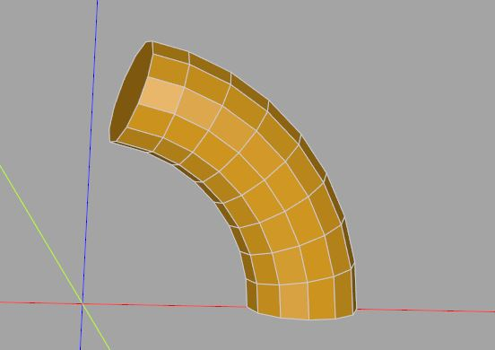
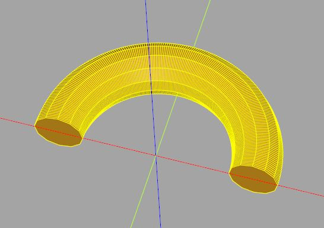
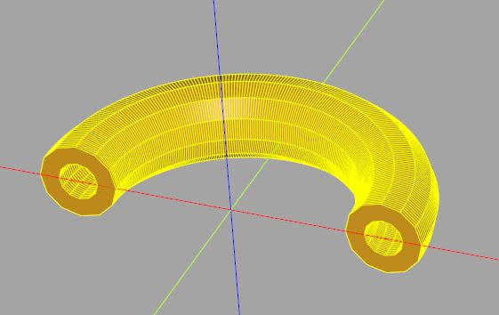
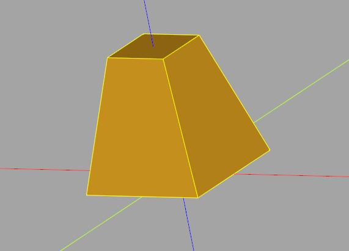
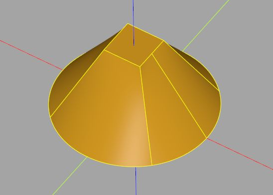
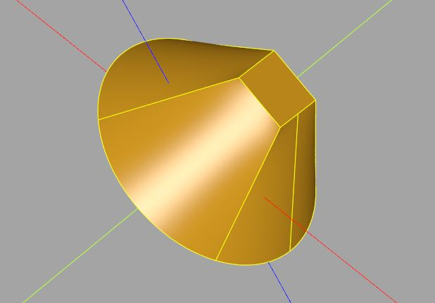
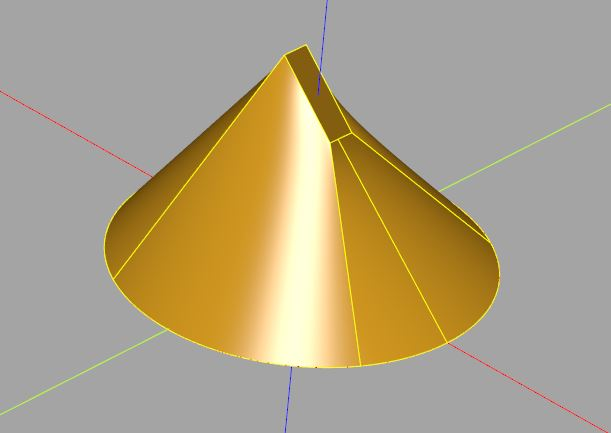

sweep 與 loft
November 26, 2021sweep 與 loft 在 3D 模型的建立過程，經常運用的手法，不過，在不同的 CAD 軟體中，sweep 與 loft 的定義略有不同，然而共同的概念是，它們將 3D 實體視為一組 2D 切面（Section）的組成。
sweep
先來看 sweep，如果將一條圓柱體，拿刀子逐層切開，可以得到許多圓切面，反過來就是，如果有許多圓切面，可以組成一個圓柱體。
不過，Workplane 的 sweep 不需要你自行處理切面，你只要給它一條路徑，它會將管理中的 Wire 沿著路徑計算出切面，然後組成一個 3D 實體。例如：
from math import radians, cos, sin
import cadquery as cq
r1 = 100
r2 = 50
fn = 12
# 在 XZ 平面為基礎建立路徑
path = cq.Workplane('XZ').polyline([
(r1 * cos(radians(a)), r1 * sin(radians(a)))
for a in range(0, 90, 10)
])
arc3d = cq.Workplane().center(r1, 0).polygon(fn, r2).sweep(path)
在建立 Workplane 時，可以指定使用哪個平面為基礎，在上例中指定了 XZ 平面，在上面建立了一個圓弧，執行 sweep 時，將形狀置於路徑的起始處，然後就像該形狀延著路徑走建立了 3D 實體：

這感覺就像是實作了一個擠出，確實地，Workplane 的 sweep 比較像是路徑擠出的概念，只不過若做點適當的封裝，會更能看出程式碼的意圖，例如，實作一個旋轉擠出函式 rotate_extrude（模仿 OpenSCAD 中的 rotate_extrude）：
from math import radians, cos, sin
import cadquery as cq
r1 = 100
r2 = 50
fn = 12
def rotate_extrude(shape, radius, a):
path = cq.Workplane('XZ').center(-radius, 0).polyline([
(radius * cos(radians(a)), radius * sin(radians(a)))
for a in range(0, a + 1)
])
return (shape.sweep(path)
.rotate((0, 0, 0), (1, 0, 0), -90)
.translate((radius, 0, 0)))
circle = cq.Workplane().polygon(fn, r2)
arc3d = rotate_extrude(circle, r1, 180)
show_object(arc3d)
rotate_extrude 接受一個在 XY 平面的 Workplane，使用其中的 Wire，可指定旋轉擠出時的半徑與角度，來看看以下的效果：

別忘了，如果 Wire 是一個包著另一個，會構成減集的效果，因此，若將上例的 circle 改為：
circle = cq.Workplane().polygon(fn, r2).polygon(fn, r2 / 2)
就會做出一個中空的管子了：

sweep 會沿著路徑計算出切面來，不過，若你想自行建立切面呢？在 CadQuery 中，這可以透過 Workplane 的 loft 來達到。例如：
import cadquery as cq
trapezoid3d = (cq.Workplane().rect(10, 10) # 第一個切面
.workplane(offset = 10).rect(5, 5) # 第二個切面
.loft())
workplane 方法在建立新的 2D 平面時，可以用 offset 指定偏移量（origin 可指定新平面中心），loft 會使用管理中的切面建立模型：

loft
loft 的切面彼此間可以是不同的形狀。例如：
import cadquery as cq
lofted = (cq.Workplane().circle(10)
.workplane(offset = 10).rect(5, 5)
.loft())
這會構成以下的模型：

有個問題是，切面不見得都是 XY、YZ、XZ 的方向啊！？Workplane 在建立時，其實可以透過 Plane 來指定平面的法向量，例如：
import cadquery as cq
lofted = (cq.Workplane(cq.Plane(origin = (0, 0), normal = (1, 1, 1)))
.circle(10)
.workplane(offset = 10).rect(5, 5)
.loft())
這會建立以下的模型，可以看到模型朝向 (1, 1, 1) 的方向：

如果切面是在不同的平面上，那麼可以透過 add 收集在一個 Workplane，然後透過 toPending 加入至待處理（pending）區，之後進行 loft：
import cadquery as cq
circle = cq.Workplane().circle(10)
rect = cq.Workplane(
cq.Plane(origin = (0, 0, 10), normal = (1, 1, 1))
).rect(5, 5)
lofted = (cq.Workplane()
.add(circle) # 收集圓切面
.add(rect) # 收集方切面
.toPending()
.loft())
這會建立以下的模型：

待處理區中可能會有邊、線等，Workplane 有些方法，會將物件放入待處理區，例如 lineTo、polyline 等，而有些方法，例如 close、extrude、sweep、loft 等，其實是從待處理區中取得物件進行處理，API 文件基本上，會提到它是從 objects 或者是待處理區中取得資料，若有疑問，可以查詢一下。
在〈堆疊與選擇器〉的最後有談到官方文件〈CadQuery Concepts〉，其中的〈An Introspective Example〉，透過範例來說明 Workplane 上一些方法對 objects、待處理區的作用，若有時間可以看一下，搭配 API 文件，在一些進階需求時，實作上就會更有彈性。